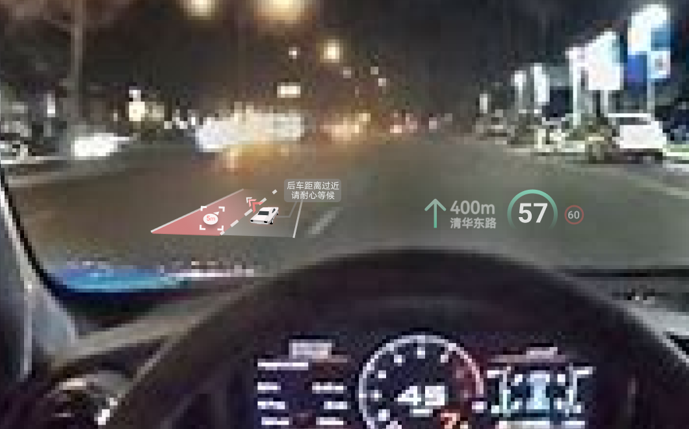

基于AR-HUD的变道辅助界面设计
在变道事故多发的当下，我们将以安全性、眼动仪测试的角度出发，结合AR-HUD（抬头显示）技术，为驾驶者设计一款变道辅助界面。
↓
项目信息
- 时间 2021/11-2021/12
- 角色 Design Lead
- 团队组成 设计*2，工程指导*1，实验员*1
- 设计选题提出、前期调研参与
- 界面设计及迭代
- 可行性测试——眼动仪实验设计
项目背景
- 随着汽车拥有量的急剧增长，道路上侧撞剐蹭随处可见，一个主要原因来自外后视镜视野不足，存在较大的盲区，驾车者在变道时观察不到侧道同行的车辆。另外，在大雨、大雾、夜晚昏暗等恶劣环境下外后视镜功能失效，更易导致变道发生事故。变道侧撞事故占到所有交通事故的30%以上。
- 尤其是对于刚拿到驾照的新手，由于驾驶技术生疏一时间还不能准确把握变道时机，同时也不知道该如何判断自己的车辆和后方车辆的距离。